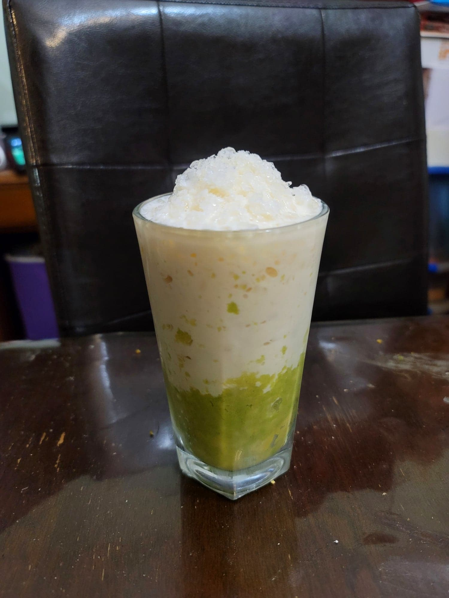

Avocado con Hielo

Ingredients:
- 1 Avocado, mashed
- 1 cup Milk or Evaporated milk
- 2 tbsp Condensed milk, or to taste
- 1 cup Ice, crushed
Instructions:
- Stir together the milk and condensed milk until homogenous.
- Place the mashed avocado into the bottom of a serving glass. Add the crushed ice and then pour the evaporated over the ice.
- Serve cold. Stir before consuming.